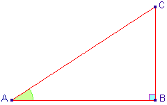

Définition 1 : On appelle cosinus et sinus d’un réel \(t\), et l’on note \(cos(t)\) et \(sin(t)\), le cosinus et le sinus d’un angle orientés dont une mesure en radians est \(t\).
Définition 2 : Pour tout réel \(t\) dont le cosinus n’est pas nul, le quotient \(sin (t)\over cos (t)\) est appelé tangente de \(t\), et est noté \(tan (t)\).
 Soit \(ABC\) est un triangle rectangle en \(B\). Le cosinus de l'angle â est le rapport des longueurs du côté adjacent à cet angle et de l'hypoténuse. Soit \(a = â\)
\(cos(a) =\) \(côté\) \(adjacent\) \(de\) \(cet\) \(angle\)/\(hypoténuse\) \(=\) \(AB\over AC\)
Le sinus de l'angle \(â\) est le rapport des longueurs du côté opposé à cet angle et de l'hypoténuse. Soit \(a = â\)
\(sin(a) =\) \(côté\) \(opposé\) \(de\) \(cet\) \(angle\)/\(hypoténuse\) \(=\) \(BC\over AC\)
Le tangente de l’angle \(â\) est le rapport des longueurs du côté opposé à cet angle et du côté adjacent à cet angle. Soit \(a = â\).
\(tan(a) =\) \(sin(a)\over cos(a)\) \(=\) \(BC\over AB\)
Truc à Retenir :
\(“Sohcahtoa”\), où \(s\) représente sinus, \(c\) représente cosinus et \(t\) représente tangente. \(o\) représente oppose, \(h\) représente hypoténuse et \(a\) représente adjacent.
Donc, \(soh ⇒ sin =\) \(o\over h\) \(coh ⇒ cos =\) \(a\over h\) \(toa ⇒ tan =\) \(o\over a\)
Soit \(ABC\) un demi triangle rectangle équilatéral, rectangle en \(A\). Soit \(BC = 1\).Comme \(ABC\) est un demi triangle équilatéral, rectangle en \(A\) et l’angle en \(B\) est \(60°\) et l’angle en \(C\) est \(30°\), \(AB\) est demie de \(BC\), donc \(AB = 12\). D’apres le theoreme de pythagore,
\(AB^2 +AC^2 = BC^2 ⇒ AC^2 = BC^2 - AB^2\)
Donc, \(AC =\) \(\sqrt{BC^2 - AB^2}\) \(=\) \(\sqrt{1^2 - 1/4}\)
\(AC =\) \(\sqrt{3\over 4} =\) \(\sqrt{3}\over 2\)
\(cos(Ĉ) = cos(30°) =\) \(AC\over BC\) \(=\) \(\sqrt{3}\over 2\)
\(cos(B) =cos(60°) =\) \(AB\over BC\) \(=\) \(1\over 2\)
\(sin(Ĉ) = sin(30°) =\) \(AB\over BC\) \(=\) \(1\over 2\)
\(sin(B) = sin(60°) =\) \(AC\over BC\) \(=\) \(\sqrt{3}\over 2\)
\(tan(Ĉ) = tan(30°) =\) \(AB\over AC\) \(=\) \(1\over 2\) \(*\) \(2\over \sqrt{3}\) \(=\) \(1\over \sqrt{3}\) \(=\) \(\sqrt{3}\over 3\)
\(tan(B) =tan(60°) =\) \(AC\over AB\) \(=\) \(\sqrt{3}\over 2\) \(*\) \(2\over 1\) \(=\) \(\sqrt{3}\)
Soit \(ABC\) un triangle rectangle isocèle en \(C\). Soit \(AB = 1\). D’apres le theoreme de Pythagore,
\(AC^2 + CB^2 = AB^2\)
Comme \(AC = BC, AC^2 + AC^2 = 2AC^2 = AB^2\)
\(⇒ AC = \sqrt{AB^2\over 2} =\) \(\sqrt{1\over 2} =\) \(1\over \sqrt{2}\) \(=\) \(\sqrt{2}\over 2\)
\(⇒ BC =\) \(\sqrt{2}\over 2\)
\(cos(A) = cos(45°) =\) \(AC\over AB\) \(=\) \(\sqrt{2}\over 2\)
\(sin(A) = sin(45°) =\) \(BC\over AB\) \(=\) \(\sqrt{2}\over 2\)
\(tan(A) = tan(45°) =\) \(BC\over AC\) \(= 1\)
Soit \(PQR\) un triangle rectangle en \(R\).
Soit \(P = θ ⇒ Q = 90 - θ\)
\(sin(P) = sin(θ) =\) \(RQ\over PQ\)
\(cos(Q) = cos(90° - θ) =\) \(RQ\over PQ\)
\(⇒ sin(P) = cos(Q) ⇒ sin(θ) = cos(90° - θ)\)
De même: \(cos(P) = cos(θ) =\) \(PR\over PQ\)
\(sin(Q) = sin(90° - θ) =\) \(PR\over PQ\) \(⇒ cos(θ) = sin(90° - θ)\)